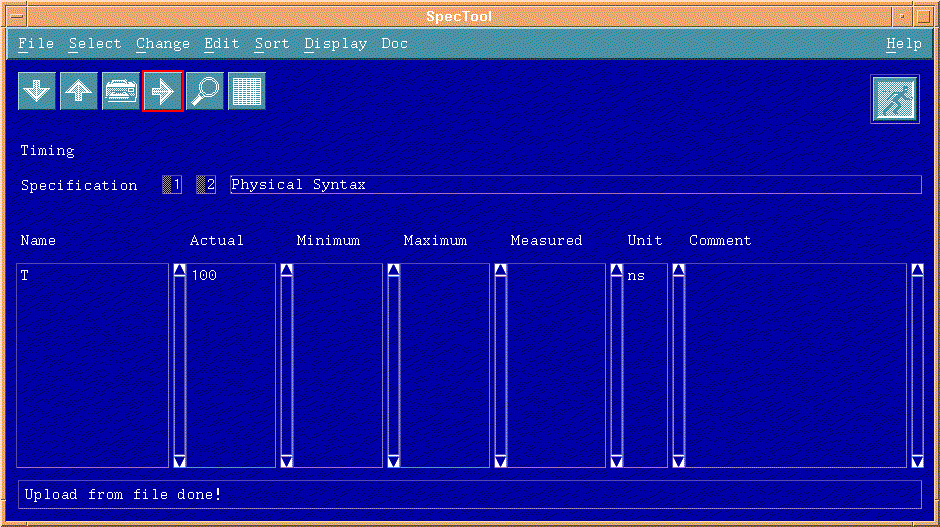

Specification set review
The Specification Set is the last module to create to complete the equation based timing setup. The Specification links the wavetable module and the equation module, as well as provides values to unresolved variables in the equation set. In the equation set defined for the example waveforms, the variable "T" was defined for the period in nanoseconds. The specification window shows the chosen equation set and wavetable with a value assigned for the period.
